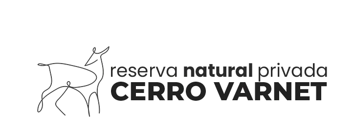
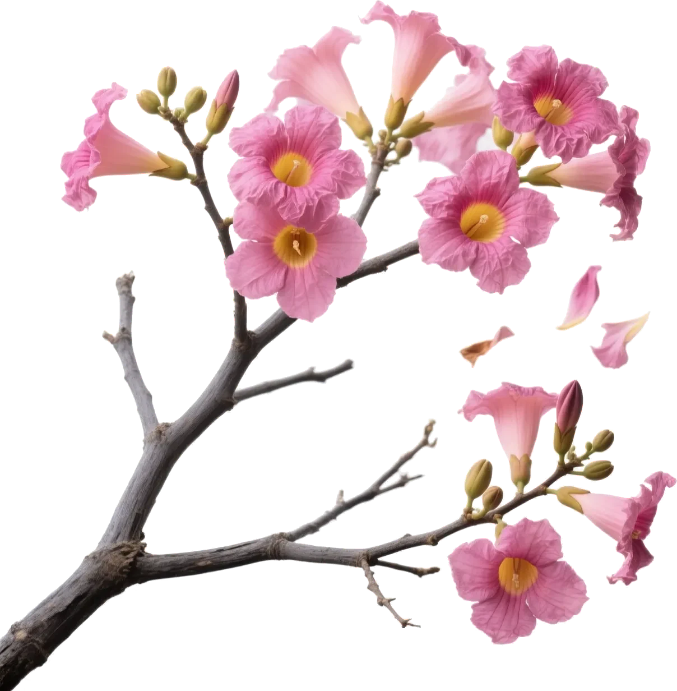
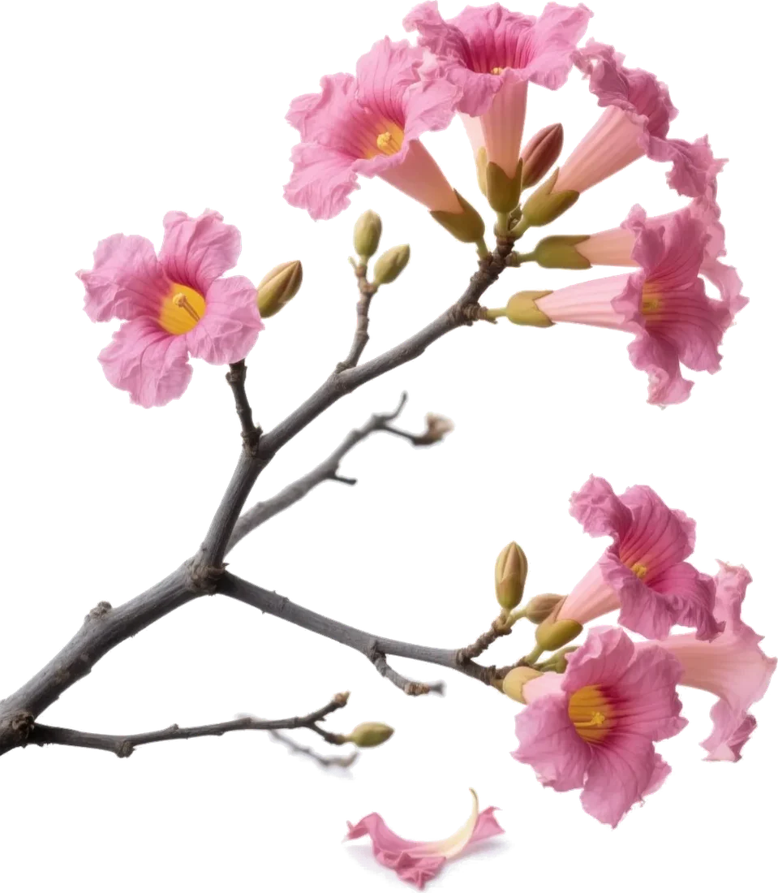
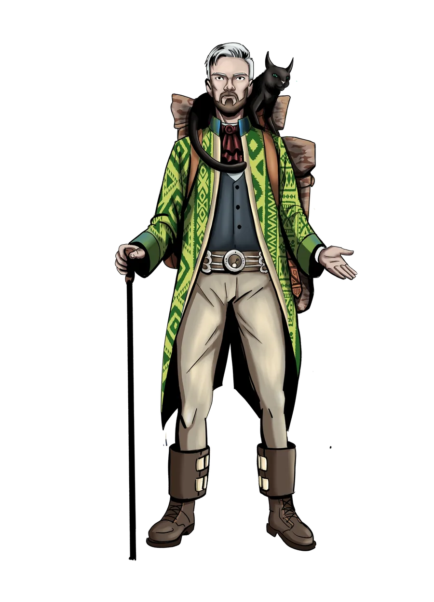
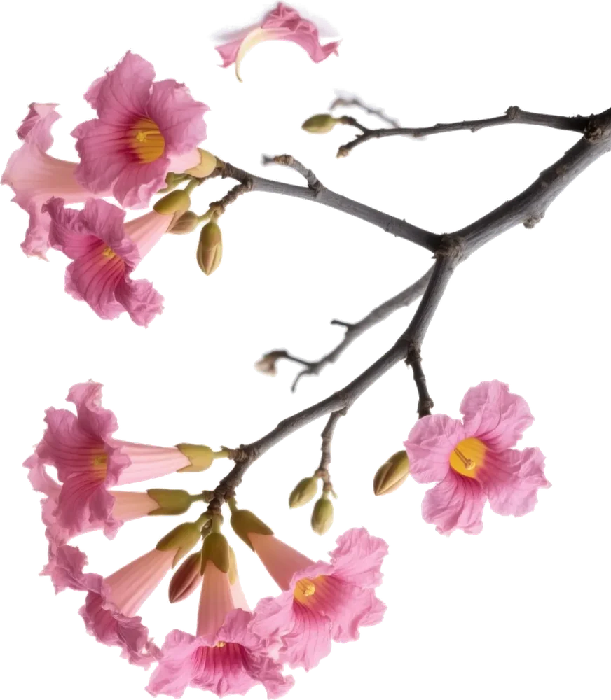

Trekking Consciente
Caminatas guiadas por el silencio, enfocadas en observar la biodiversidad local y en la respiración.


Una reserva privada pensada para el senderismo consciente. Un refugio de silencio y aire puro, tan cerca que podés venir todos los días.
Explorá nuestros senderos digitalizados: el mapa interactivo te muestra los puntos clave, ingresos y recorridos antes de pisar el cerro. El acceso es privado, seguro y muy cercano.
Desde una caminata tranquila hasta un entrenamiento de montaña: elegí el ritmo que va con vos.
Caminatas guiadas por el silencio, enfocadas en observar la biodiversidad local y en la respiración.
Senderos que serpentean el cerro con vistas panorámicas de la ciudad de Salta y el valle.
Rutas con desnivel positivo para quienes buscan un entrenamiento físico intenso en la montaña.

Cerro Varnet no es solo un destino: es un aula viva. La única forma de proteger nuestra selva de montaña es conociéndola, por eso cada caminata es una oportunidad de aprender.
Senderos, miradores, la cascada y las zonas donde viven corzuelas, pavas y liebres, con el acceso desde la Ruta 9. Tocá cada punto del mapa para ver el detalle.
Godomar es nuestro asistente virtual con alma de montaña. Por WhatsApp se convierte en tu compañero de senderismo.


Estamos a solo 20 minutos del centro de Salta. Abrí la ruta en tu celular y el GPS te lleva hasta la entrada de la reserva.
Reserva natural privada orientada al turismo de naturaleza y contemplación.
© 2026 Reserva Cerro Varnet. Cierva 3D: «Realistic Animated Doe 3D Model» de WildMesh 3D, licencia CC BY 4.0, adaptada (animaciones recortadas, materiales y texturas optimizados).